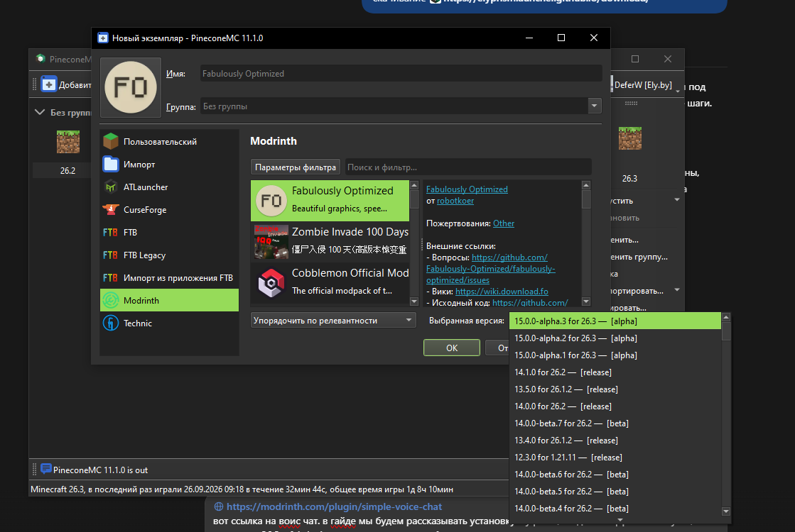
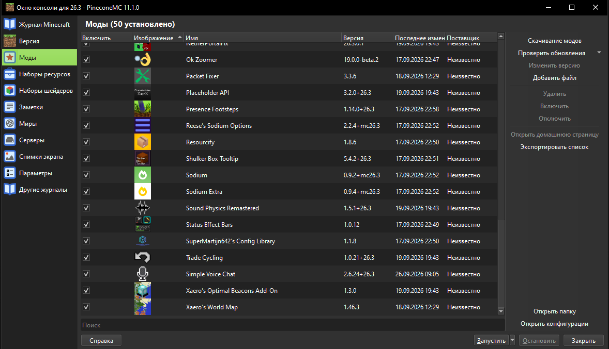

Discord
Подайте заявку в вайтлист и дождитесь одобрения. В Discord — новости, общение и помощь со входом.
Открыть Discord ↗01Скачайте лаунчер
Используем ElyPrismLauncher. На официальном сайте он теперь называется PineconeMC — это тот же проект.
- Откройте страницу скачивания и выберите свою операционную систему.
- Для обычного компьютера на Windows с процессором Intel или AMD выберите Windows → x64 → Setup. Для ARM-компьютера нужна ARM64-версия.
- Запустите установщик, завершите установку и откройте лаунчер. Выберите русский язык. Если мастер предлагает настройку Java, используйте автоматический подбор.
02Создайте оффлайн-аккаунт
- Откройте меню аккаунтов в правом верхнем углу лаунчера и перейдите к управлению аккаунтами.
- Выберите добавление оффлайн-аккаунта (Offline). Название пункта может отличаться в зависимости от языка интерфейса.
- Введите ник, который указали в заявке на вайтлист. Проверьте написание и регистр букв.
- Сохраните аккаунт и выберите его для запуска игры.
Оффлайн-аккаунт — локальный профиль лаунчера. Не меняйте ник после одобрения заявки без согласования с администрацией.
03Установите Minecraft 26.3
Проще установить готовую сборку Fabulously Optimized. В ней уже есть Fabric и моды для оптимизации.
- Нажмите «Добавить экземпляр» и выберите Modrinth слева.
- Найдите Fabulously Optimized.
- В поле «Выбранная версия» выберите выпуск именно для 26.3. На скриншоте это 15.0.0-alpha.3 for 26.3. Alpha — предварительная версия; если доступен стабильный выпуск для 26.3, выбирайте его.
- Нажмите «ОК» и дождитесь установки. Запустите экземпляр, чтобы лаунчер скачал файлы игры. После появления главного меню закройте Minecraft перед установкой голосового мода.

Вариант без готовой сборки
Добавьте обычный экземпляр Minecraft 26.3. Откройте «Изменить» → «Версия» → установку Fabric и выберите совместимый Fabric Loader. Затем установите Simple Voice Chat по следующему шагу.
04Добавьте Simple Voice Chat
- Откройте Simple Voice Chat на Modrinth.
- В разделе версий выберите Minecraft 26.3 и загрузчик Fabric, затем скачайте файл
.jar. Несмотря на слово «plugin» в адресе страницы, для игры нужен мод Fabric, а не серверный плагин Paper или Bukkit. - В лаунчере выберите установленную сборку → «Изменить» → «Моды» → «Добавить файл». Укажите скачанный
.jar; распаковывать его не нужно. - Убедитесь, что Simple Voice Chat появился в списке и включён галочкой. Не устанавливайте несколько его версий одновременно.

Также можно установить мод через «Моды» → «Скачивание модов» → Modrinth, проверив версию игры и загрузчик.
05Зайдите на сервер
- Прочитайте правила и дождитесь одобрения заявки в Discord.
- Запустите установленный экземпляр Minecraft с выбранным оффлайн-аккаунтом.
- Откройте «Сетевая игра» → «Добавить сервер».
- Укажите любое название, например WHTSKY. В поле адреса вставьте whtsky.mineserv.ru — без
https://. - Нажмите «Готово», выберите сервер и подключитесь.
Если появилась ошибка вайтлиста, проверьте выбранный ник и статус заявки. Если версия не совпадает — убедитесь, что запущена именно 26.3.
06Настройте микрофон
- После входа нажмите V — стандартную клавишу меню Simple Voice Chat.
- Пройдите мастер настройки: выберите микрофон и наушники, затем режим передачи голоса. Для начала удобно использовать разговор по нажатию кнопки.
- Назначьте кнопку разговора и проверьте микрофон в настройках мода. Разрешите доступ к микрофону в операционной системе, если она его запрашивает.
Если меню не открывается, проверьте назначение клавиш в Minecraft. Если мод сообщает, что голосовой чат не подключён, напишите в Discord: для работы нужна настройка и на стороне сервера.